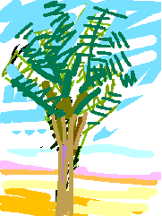

My great anticipation is realized. The hurdle of the Israeli border is past. I am in Palestine. Our path is right through Beisan. Ah! Beisan! I search the sights for the reflections of my heart. The Hebrew sign names it as 'Bet Sheim.' to make it antiseptic for its strictly Israeli residents. The Palestinian villagers have been forcibly evicted to a life of want in refugee camps across the border. Some of the new occupants have skimpy dress and bare bellies but many women wear long black skirts and some have white shawls. Are they trying to look earthy in imitation of the Palestinian peasants whom they replace? Is this a purchase of absolution? I visualize them struggling through the thickness of their guilt.

The bus continues. My eyes are wide open doorways. The land is beautiful. I like nothing they did to it but I can see so easily how well they have irrigated it with US tax dollars. Some of them are my own. Ah the contradictory treacheries of privilege and advanced capitalism. I look with chagrin at those poor palm trees which populated my childhood drawings. I do not like how they trim them. They used to possess such gracious gestures.
My Grandmother... The Town of Beisan... The Arab City of Jerusalem... Sabah Told Me... My Home in Yafa... Khader Told Me... Olives of Palestine... Our Students... A Taxi Ride in Bethlehem... Written by Doctor Fathihe Saudi... Hasan Told Me... A Visit to Kafr Qasem... The Artist of Kafr Qasem... The Massacre at Kafr Qasem (not yet ready)
Tayseer Barakat, painter... Rana Bishara, painter and installation artist... Sari Khouri, painter... Abdel Tamam, painter... Vera Tamari, ceramist and painter... Adnan Yahya, painter and graphic artists...